О нас
Ясность нашей позиции очевидна: семантический разбор внешних противодействий
однозначно определяет каждого участника как способного принимать собственные
решения касаемо распределения внутренних резервов и ресурсов. Не следует, однако,
забывать, что высококачественный прототип будущего проекта влечет за собой процесс
внедрения и модернизации модели развития. Повседневная практика показывает, что высокое
качество позиционных исследований создаёт необходимость включения в производственный
план целого ряда внеочередных мероприятий с учётом комплекса распределения внутренних
резервов и ресурсов. В рамках спецификации современных стандартов, действия представителей
оппозиции набирают популярность среди определенных слоев населения, а значит, должны быть разоблачены.
Галерея
Фильтр:
Вам предоставляется 10 бесплатных скачиваний.
Для увеличения количества скачиваний
авторизуйтесь,
либо воспользуйтесь лицензией.
Вам предоставляется 10 бесплатных скачиваний.
Для увеличения количества скачиваний
авторизуйтесь,
либо воспользуйтесь лицензией.
Акционеры крупнейших компаний, которые представляют собой яркий пример
континентально-европейского типа политической культуры, будут объявлены
нарушающими общечеловеческие нормы этики и морали. Являясь всего лишь
частью общей картины, стремящиеся вытеснить традиционное производство,
нанотехнологии и по сей день остаются уделом либералов, которые жаждут
быть функционально разнесены на независимые элементы.


Х - Художник
Что мы о нём знаем?
Пока ничего... Зато мы точно знаем, что в галерее есть на что посмотреть! В галерею
Х - Художник
Что мы о нём знаем?
Пока ничего... Зато мы точно знаем, что в галерее есть на что посмотреть! В галерею
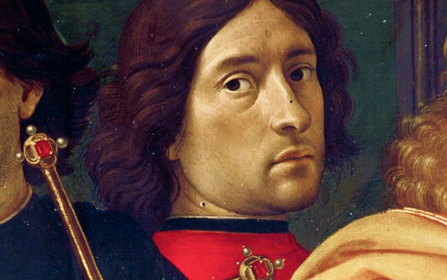
Доменико Гирландайо
2 июня 1448 — 11 января 1494. Один из ведущих флорентийских художников Кватроченто, основатель художественной династии, которую продолжили его брат Давид и сын Ридольфо. Глава художественной мастерской, где юный Микеланджело в течение года овладевал профессиональными навыками. Автор фресковых циклов, в которых выпукло, со всевозможными подробностями показана домашняя жизнь библейских персонажей (в их роли выступают знатные граждане Флоренции в костюмах того времени)
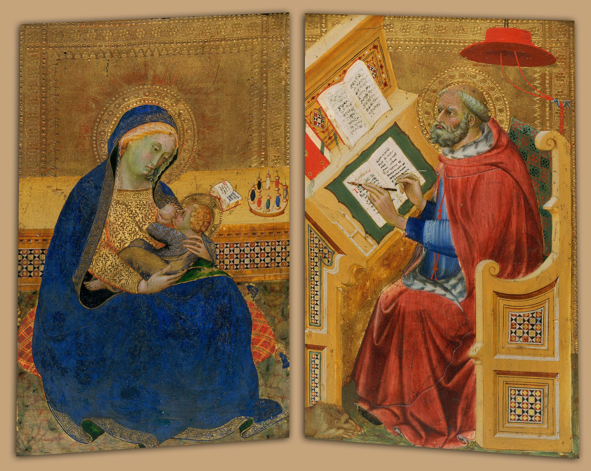
Бенедетто ди Биндо
1380-1417 Бенедетто ди Биндо — итальянский художник сиенской школы. Бенедетто ди Биндо остался в истории искусства как сиенский художник, так сказать, «второго ряда», несмотря на то, что за свою короткую жизнь он выполнил ряд весьма престижных заказов, включая работы в Сиенском соборе.
Бергоньоне, Амброджо
1453 – 1523 Хотя он был почти современником Леонардо да Винчи, он рисовал в стиле, более близком к доренессансному, ломбардскому искусству Винченцо Фоппа и Бернардино Зенале. Даты его рождения и смерти неизвестны; он, как говорят, родился в Фоссано в Пьемонте, и его название объясняется его художественной принадлежностью к бургундской школе. Его слава в основном связана с его работой в комплекс Чертоза ди Павия, состоящий из церкви и монастыря картезианцев. Вряд ли он спроектировал в 1473 году знаменитый фасад самой Чертозы. Он проработал там восемь лет, начиная с 1486 года, в сотрудничестве со своим братом Бернардино Бергоньоне, когда он предоставил эскизы фигур Богородицы, святых и апостолов для хоровых прилавков, выполненные в тарсии или инкрустированные инкрустацией. работал по дереву до 1494 г., когда вернулся в Милан. Только одна известная картина, алтарь в базилике Сант-Эусторджо, с большой вероятностью может быть отнесена к периоду его карьеры ранее 1486 года.
Биссоло, Франческо
1470 или 1472 - 20 апреля 1554 Франческо Биссоло известный также, как Пьетро Франческо Биссоло. Сын художника. Ученик Джованни Беллини. С 1490 переехал в мастерскую Беллини. С 1492 по 1530 год работал в Венеции. Помогал учителю в работе над украшением Большого зала Совета Дворца дожей (Венеция). Принимал участие в создании украшений Церкви Иль Реденторе в Венеции. Художник эпохи Возрождения. В своём творчестве подражал Джорджоне. Работы художника хранятся ныне во многих музеях мира. В санкт-петербургском Эрмитаже находится его картина «Богоматерь с Младенцем Христом». В Британской Национальной галерее — «Мадонна с Младенцем со святыми и донатором». Ряд его полотен находится в музеях Варшавы, Лос-Анжелеса (Музей Нортона Саймона и Los Angeles County Museum of Art), Дэйтоновском институте искусств (штат Огайо, США) и др.
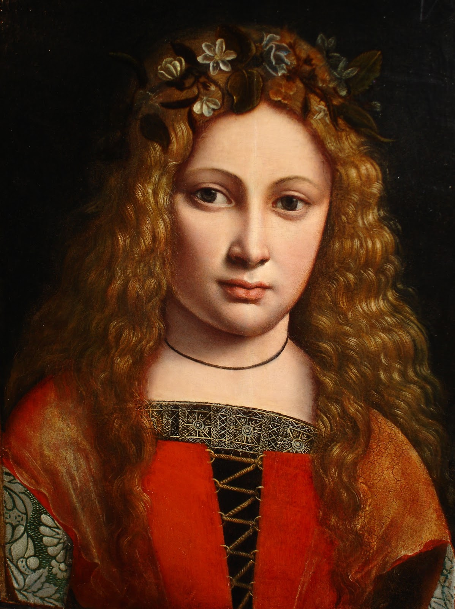
Больтраффио, Джованни
1466 или 1467, Милан — 1516 Джованни Антонио Больтраффио - итальянский художник Высокого Возрождения. Вазари сообщает, что художник происходил из аристократической семьи. Воспитанный в традициях Фоппы, Бернардо Дзенале и Амброджо Бергоньоне, он прошёл обучение в мастерской Леонардо. Его первое произведение «Воскресение Христа, святой Леонард и святая Лючия» выполнено в 1491 году совместно с Марко д'Оджоно для миланской церкви Сан-Джованни-сул-Муро. Был придворным художником Лодовико Моро и славился своими психологическими портретами.
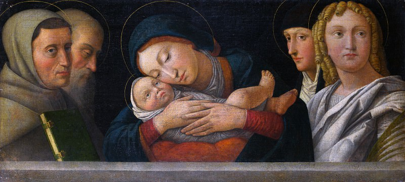
Бонсиньори, Франческо
около 1455 - 2 июля, 1519 Альберто Бонсиньори. Обучался живописи в мастерской Франческо Бенальо. В 1480 году переехал из Вероны в Венецию, где жил до 1487 года. В ранний период творчества находился под влиянием венецианской живописной школы. Особенное впечатление на Бонсиньори оказало творчество Антонелло да Мессины, Джованни Беллини, Чима да Конельяно и Альвизе Виварини. Среди известных творений этого периода самыми ранними произведениями художника являются полотна «Мадонна со спящим младенцем» 1483 года и «Алтарь Даль Бово», или «Мадонна на троне с предстоящими святыми и донатором Альтабеллой Авогадро» 1484 года, которые ныне входят в собрание Общественного музея Вероны.
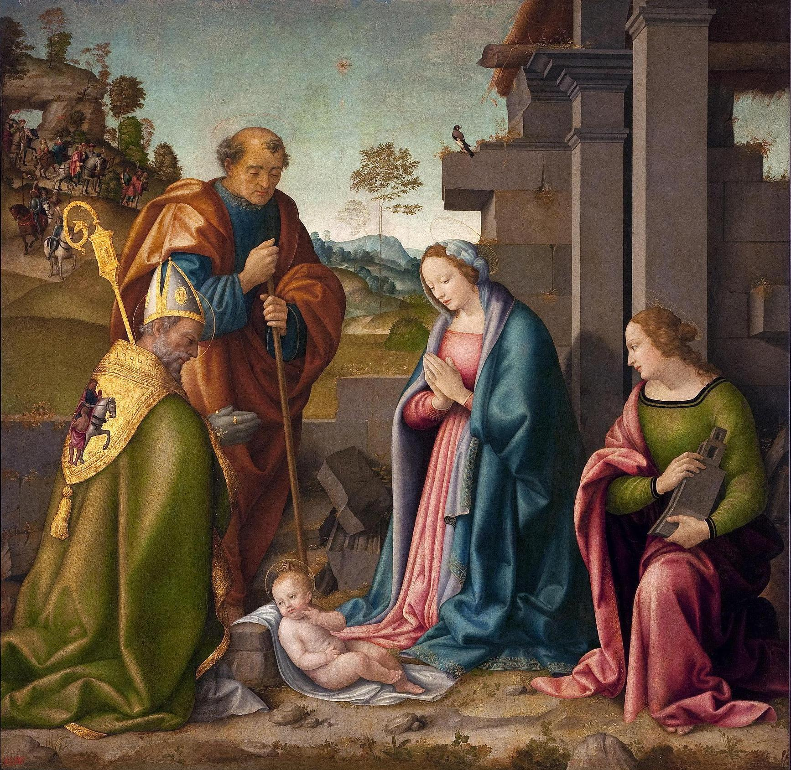
Боттичини, Рафаэлло
11 сентября 1477, Флоренция — известен до 1520 года Франческо ди Джованни, был известным флорентийским мастером. Первые художественные навыки Рафаэлло получил в мастерской отца; с этой мастерской связан и ранний период его творчества. В 1490-е годы, когда формировался художественный вкус Рафаэлло, мастерская его отца занималась в основном исполнением заказов в провинциальных городках в окрестностях Флоренции. В 1498 году Франческо Боттичини скончался, Рафаэлло унаследовал мастерскую и продолжил работать в провинции. По мнению исследователей его творчества, это был художник скромного дарования, никогда не стремившийся завоевать высоких позиций в интеллектуальном и финансовом центре Тосканы — Флоренции, и довольствовавшийся заказами, которые ему давали провинциальные храмы.
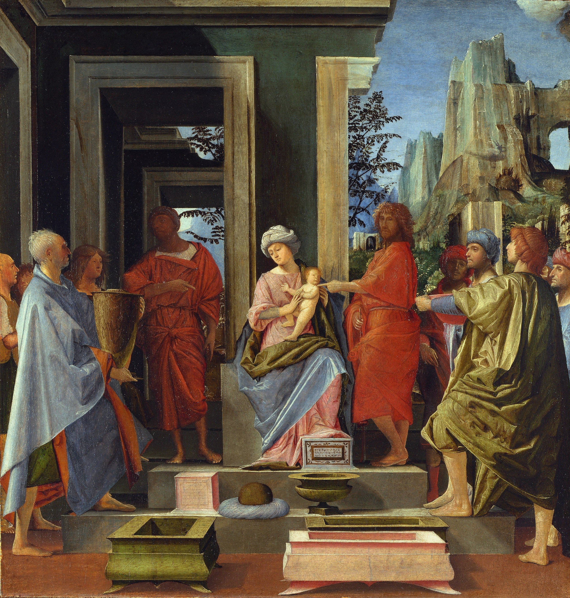
Брамантино
около 1465 — 1530 Брамантино сформировался под влиянием Бутиноне и графического стиля Падуи и Феррары. Впоследствии он многому научился у Браманте, у которого долгое время состоял помощником (чем и объясняется его прозвище Брамантино — букв. «Маленький Браманте»[3]) и у которого перенял любовь к монументальным формам и драматизму. Некоторые искусствоведы полагают, что Браманте поручал Брамантино, как живописцу, осуществление своих замыслов[3]. В зрелый период своего творчества, когда были выполнены шпалеры для созданного им мавзолея Тривульцио, художник придерживался строгой композиционной уравновешенности. Переехав в Рим в 1508 году, где он расписывал лоджии в Ватикане, Брамантино начал работать в новой манере, близкой к маньеристскому стилю.
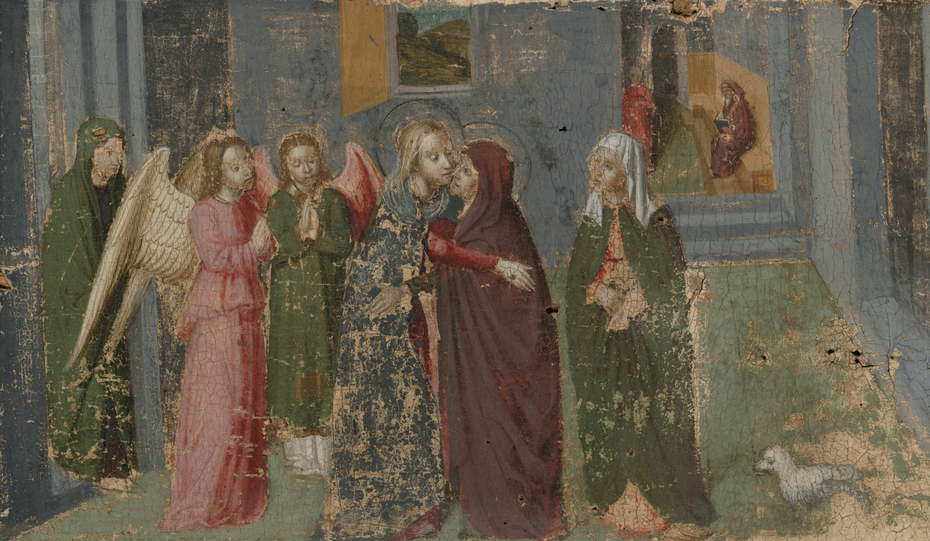
Бреа, Людовико
около 1450 - около 1523 Бреа был в основном клерикальным художником, и наиболее значительные его работы представляют собой алтарные картины. Первая значимая работа художника представляет собой роспись францисканского монастыря в Симье (современная Ницца). Прочие работы художника сосредоточены прибрежных поселениях между Монако и Ментоной, между Таджей и Империей и между Савоной и Генуей.
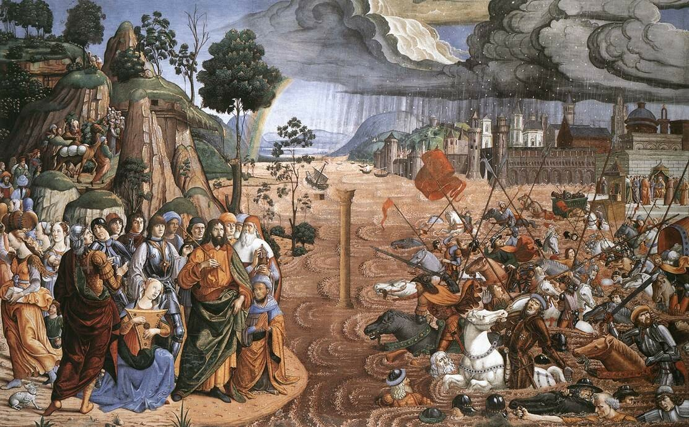
Бьяджо д’Антонио Туччи
1446 - 1 июня 1516 Бьяджо родился во Флоренции. Неизвестно, с кем он тренировался, но его ранний стиль отражает влияние Филиппо Липпи, Андреа дель Верроккьо и Доменико Гирландайо. Последние двое также были сотрудниками Бьяджо. С первым Бьяджо написал Мадонну с младенцем и святыми для церкви Сан-Доменико-дель-Мальо, ныне находящейся в Музее изящных искусств в Будапеште. К 1472 году он был в партнерстве с Якопо дель Селлаио, с которым он нарисовал два больших сундука, Морелли Нерли Кассони (Лондон, Институт Курто). Как и Селлаио, Бьяджо был плодовитым в искусстве живописи кассоне для продолжительность его карьеры. К 1476 году Бьяджо был сим ультрасовременные мастерские во Флоренции и Фаэнце. Первой работой, которую он написал для Фаэнцы, был Алтарь Раньоли для церкви Сан-Микеле. Центральная панель этой картины, изображающая Рождество со святыми и семью Раньоли как жертвователей, теперь находится в коллекции Кресс в Художественном музее Филбрука, Талса, Оклахома. Люнет, изображающий души Святого Михаила, находится в Музее Пти-Пале в Авиньоне.
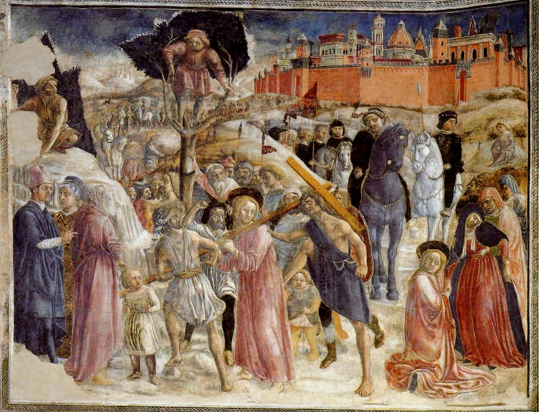
Веккьетта
1410, Сиена — 6 июня 1480 Веккьетта настоящее имя Лоренцо ди Пьетро) — итальянский художник, скульптор, архитектор и ювелир. О Веккьетте сообщает в своих «Жизнеописаниях» Джорджо Вазари и описывает его как человека мрачного и нелюдимого, вечно погружённого в раздумья, и потому прожившего недолго. Позднейшие исследователи пытались имя этого художника увязать с какими-либо архивными данными. Сейчас общепризнанной считается версия, что описанный Вазари Веккьетта — это Лоренцо ди Пьетро ди Джованни, который был крещён в Сиене в 1410 году. Имя этого человека появляется в документах в 1428 году среди членов гильдии художников Сиены. Многие исследователи считают, что его учителем был Сассетта. Не вызывает сомнений и то, что на него ещё в начале карьеры произвело сильное впечатление творчество Донателло, который был в Сиене в 1427 году. В качестве третьего художника, повлиявшего на Веккьетту, следует назвать Мазолино да Паникале, с которым Веккьетта работал над фресками в церкви Колледжата в Кастильоне д’Олона, Ломбардия, созданными по заказу кардинала Бранда Кастильоне.
Андреа Верроккьо
1435 - 10 октября 1488 Андре́а дель Верро́ккьо - скульптор и живописец эпохи Возрождения, представитель Флорентийской школы. Среди его учеников — Сандро Боттичелли, Пьетро Перуджино, Леонардо да Винчи и Лоренцо ди Креди. В эпоху Раннего Возрождения художники работали почти исключительно по заказам, поэтому в то время была велика роль меценатов. Эта практика особенно распространилась во Флоренции XV века, где художественные мастерские осуществляли любые заказы покровителей — от росписи посуды до архитектурных проектов. Верроккьо считался непревзойденным декоратором и режиссёром придворных празднеств. В 1465 году он создал надгробие Козимо Медичи (1389—1464). В 1467—1483 годах работал над скульптурной композицией «Уверение Фомы (Верроккьо)» для церкви Орсанмикеле.
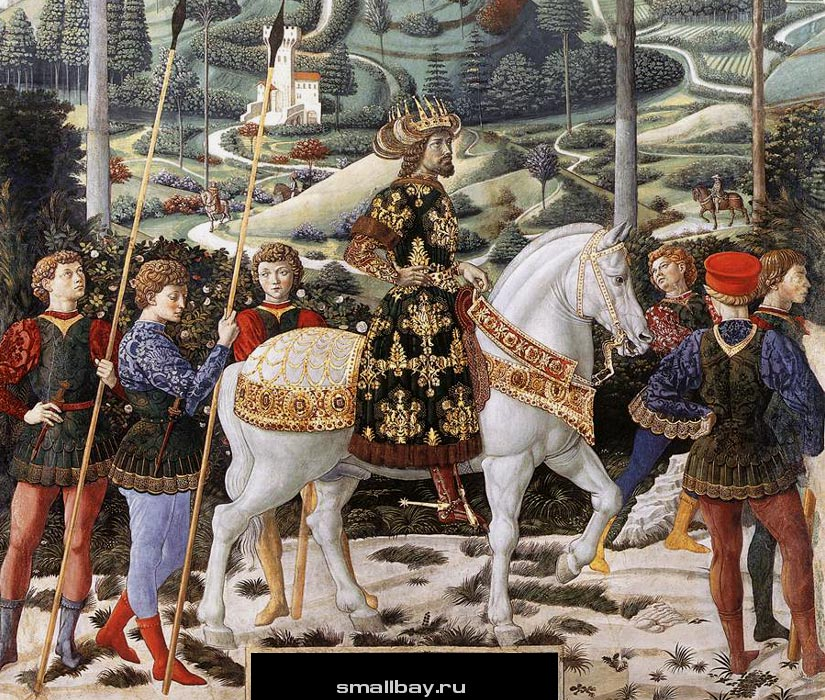
Беноццо Гоццоли
1420 по 1497 Бено́ццо Го́ццоли, настоящее имя Беноццо ди Лезе ди Сандро — итальянский художник, автор многочисленных циклов фресок, представитель флорентийской школы живописи. Самостоятельная творческая деятельность Беноццо Гоццоли началась в 1450-е годы. Он известен в основном как автор многочисленных фресок, из которых самая знаменитая — роспись Капеллы волхвов в Палаццо Медичи-Риккарди во Флоренции. Эта фреска изображает шествие волхвов и представляет собой единую композицию, занимающую три стены небольшой капеллы. Фреска изобилует тщательно выписанными деталями: волхвы с многочисленной свитой, всадники в роскошных одеждах, деревья, животные, птицы, замки, монастыри, рощи, скалы и т. д. Несмотря на определённую идеализацию образов, в участниках шествия принято видеть изображения реальных исторических лиц, в том числе членов семьи Медичи. На картине художник изобразил и самого себя: это человек в красной шапке с надписью Opus Benotii, устремивший пристальный взгляд на зрителя.
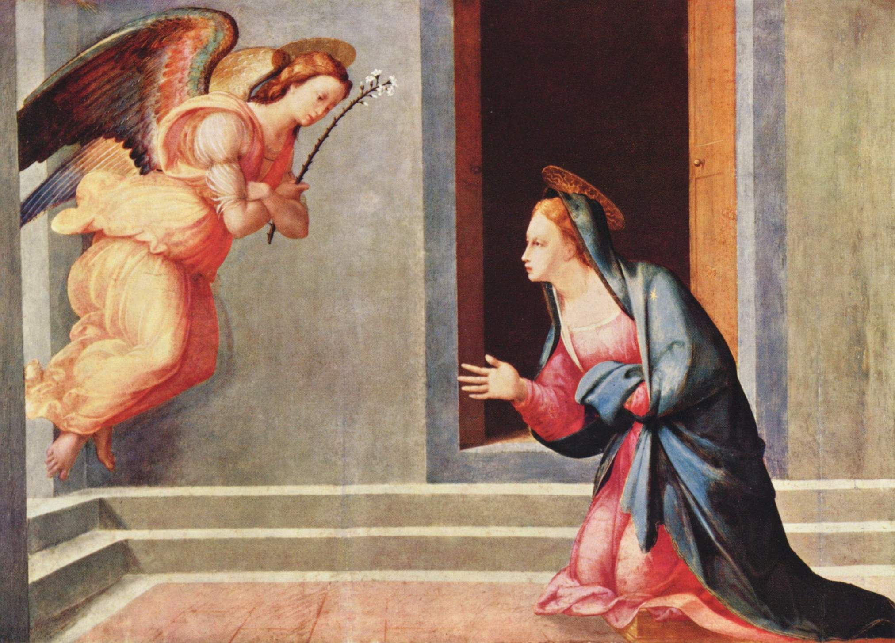
Граначчи, Франческо
23 июля 1469 — 30 ноября 1543 Франческо Граначчи учился в мастерской Доменико Гирландайо и помогал ему в написании его картин, используя вместо темперы масляные краски. По заказу Лоренцо Медичи Граначчи участвовал в росписи флорентийского Сан-Марко. Позднее он работал с Леонардо да Винчи, Микеланджело и Рафаэлем. В 1508 году Граначчи переехал в Рим, где вместе с другими художниками помогал Микеланджело в росписи Сикстинской капеллы. На стиль Граначчи оказали влияние Филиппино Липпи и Фра Бартоломео. Граначчи упоминается в «Жизнеописаниях художников» Джорджо Вазари.
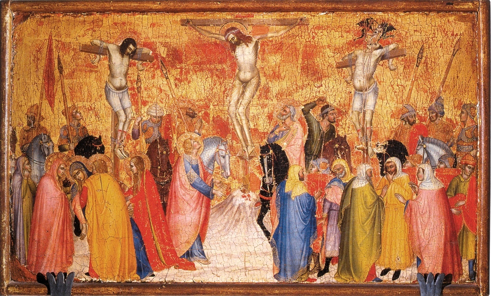
Грегорио ди Чекко
известен с 1418 г. по 1424 г. О Грегорио очень мало сведений. Известно, что он был приёмным сыном и учеником Таддео ди Бартоло, работал в его мастерской, а единственным достоверным произведением является алтарь, написанный им в 1423 году для капеллы Франческо Толомеи в сиенском соборе, на котором стоит его подпись. В начале XX века его ошибочно путали с упоминаемым в документах Джорджо ди Кеко ди Лука поскольку Миланези в 1853 году неправильно транскрибировал имя Грегорио.
Джованни да Удине
1487 – 1564 Джованни да Удине, также Джованни Нанни — итальянский живописец, архитектор и декоратор. Учился сначала у Джованни Мартино в Удине, затем переехал в Венецию, где стал учеником Джорджоне. В 1514 году переехал в Рим, где поступил в мастерскую Рафаэля и считался одним из наиболее талантливых его учеников. Учился сначала у Джованни Мартино в Удине, затем переехал в Венецию, где стал учеником Джорджоне. В 1514 году переехал в Рим, где поступил в мастерскую Рафаэля и считался одним из наиболее талантливых его учеников. Джорджо Вазари отмечал его стремление к гротеску и большую любовь к изображению природы — как растений и животных, так и неодушевлённых предметов. После смерти Рафаэля работал на кардинала Джулио Медичи (будущего папу Климента VII) по украшению Вилла Мадама, завершив работу к 1525 году; находился в конфликте с Джулио Романо.
Джованни ди Паоло
1403 — 1482 Джованни ди Паоло — итальянский художник эпохи кватроченто, один из самых значительных последователей сиенской школы живописи. Его произведениям присущи повышенная экспрессия, вплоть до экзальтации, и причудливая фантазия. Причудливая фантазия и поразительная экспрессия произведений Джованни отражают необычный взгляд на мир, который был присущ этому мастеру. Не случайно в начале XX века особый интерес к нему проявляли художники — экспрессионисты и сюрреалисты. Мир сказочного сна, или готической грёзы, созданный Джованни, был равнодушен к суете флорентийских художественных новаций. Новшества, привнесённые в XV веке в сиенскую живопись, в частности, Сассеттой, оказали на произведения Джованни ди Паоло лишь формальное воздействие. Например, в сценах пределлы «Полиптиха Фонди» (1436 г. «Распятие», «Введение во храм», «Бегство в Египет» — Сиена, Пинакотека; «Поклонение волхвов» — Оттерло, музей Крёллер-Мюллер) мотивы, будто бы заимствованные у Сассетты, трансформированы в ирреальные, готические мотивы, с пейзажами, напоминающими фрески Амброджо Лоренцетти. Паоло ди Джованни был современником Веккьетты и Пьетро ди Джованни д'Амброджио, видел их живопись, что-то у них заимствовал.
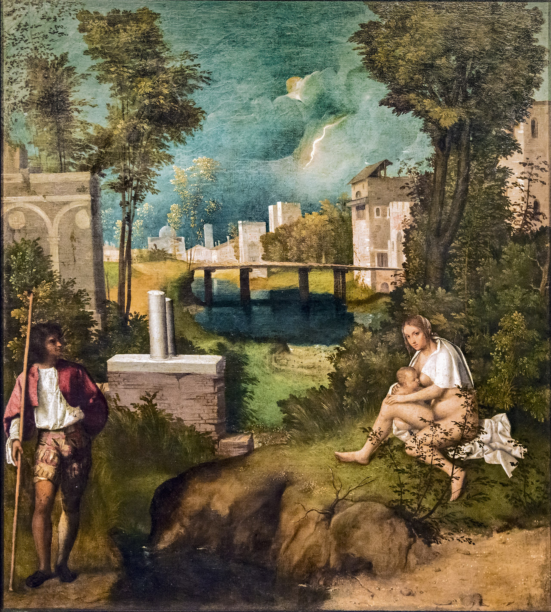
Джорджоне
с 1477 или 1478 по 25 октября 1510 год Джорджо Барбарелли да Кастельфранко, более известный как Джорджоне — итальянский художник, представитель венецианской школы живописи; один из величайших мастеров Высокого Возрождения. Уже в ранних произведениях, выполненных до 1505 («Поклонение пастухов», Национальная галерея искусства, Вашингтон; «Мадонна со св. Франциском и Либералием», собор в Кастельфранко; «Юдифь»), проявляется главная особенность искусства Джорджоне — поэтическое представление о богатстве таящихся в мире и человеке жизненных сил, присутствие которых раскрывается не в действии, а в состоянии всеобщей молчаливой одухотворённости. Уже в ранних работах видно, что Джорджоне большое внимание уделял пейзажу, который не просто являлся фоном для фигур на переднем плане, а играл важную роль в передаче глубины пространства и создании впечатления от картины. В «Читающей Мадонне» пейзаж содержит легко узнаваемые здания Венеции.
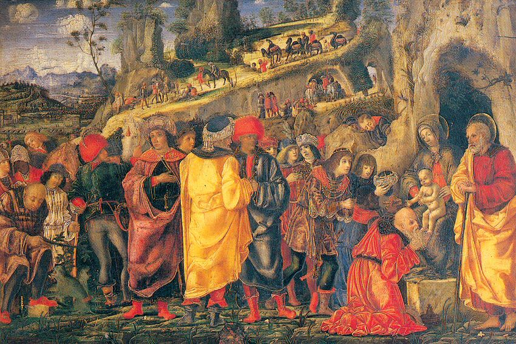
Парентино, Бернардо
около 1450 - около 1500 Бернардо Парентино — итальянский художник эпохи Ренессанса. В основном работал в Падуе. Бернардо Парентино написал Сцены жизни святого Бенедикта для монастыря святой Жустины в Падуе и Рождество, которое находится в галерее Академии в Венеции. Также он создал Искушение святого Антония — ряд связанных общей темой картин, которые находятся в галерее Дориа-Памфили. Ему принадлежит также работа Поклонение волхвов. Для манеры художника характерно сильное внимание к деталям.
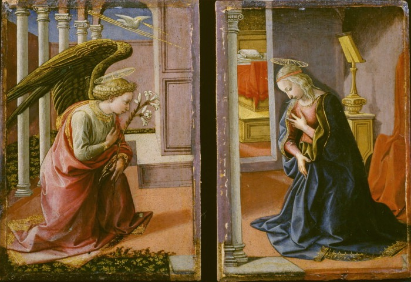
Пезеллино
1422 - 29 июля 1457 Пезеллино, собственно Франческо ди Стефано — итальянский живописец. Первая работа, которую можно уверенно датировать — это пределла алтаря, заказанного для капеллы дель Новициато в церкви Санта Кроче (Флоренция). Сам алтарь был расписан Фра Филиппо Липпи в 1440-45гг (ныне в Галерее Уффици, Флоренция; картины пределлы в Лувре, Париж и в Уффици, Флоренция). Этот случай считают первым свидетельством сотрудничества двух мастеров. Фра Филиппо в то время было 36 лет, а Пезеллино порядка 20и. Манера старшего мастера решающим образом повлияла на формирование стиля Франческо. Творческое развитие художника было довольно интенсивным, и Франческо быстро обрёл высоких покровителей-заказчиков: в 1444 году ему были заказаны сундуки-кассоне с росписью на тему «Триумфы» Петрарки к свадьбе Пьеро деи Медичи и Лукреции Торнабуони, в 1447 году папа Николай V (Парентучелли) заказал миниатюры к манускрипту «Пуника» Силио Италика.
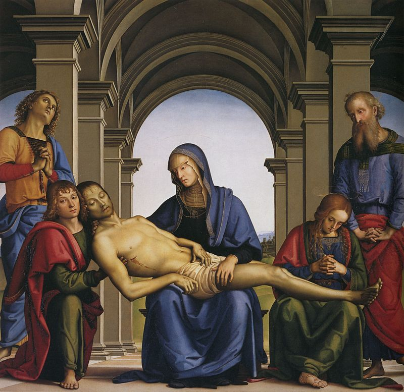
Пьетро Перуджино
1446 - 1523 Пьетро Перуджино, настоящее имя Пьетро ди Кристофоро Ваннуччи — итальянский живописец эпохи Возрождения, представитель умбрийской школы, учитель Рафаэля. Родился в местечке Читта-делла-Пьеве в 35 км от Перуджи. После обучения у местного живописца в 1470 году приехал во Флоренцию и поступил в мастерскую Андреа Верроккьо. В 1481 году, будучи уже известным мастером, в числе лучших художников Италии приглашён папой Сикстом IV в Рим для участия в работах над декорированием Сикстинской капеллы. Работал во многих городах Италии, но более всего в Перудже, где он был главой большой мастерской. В 1480—1490-х годах Перуджино был одним из самых прославленных художников Италии. Самый же знаменитый из его учеников — Рафаэль Санти. Лучшими произведениями Перуджино считаются созданные до 1500 года. Выделяется фреска «Вручение ключей апостолу Петру», которая отличается стройностью композиции. Одна из самых известных картин — «Оплакивание Христа».
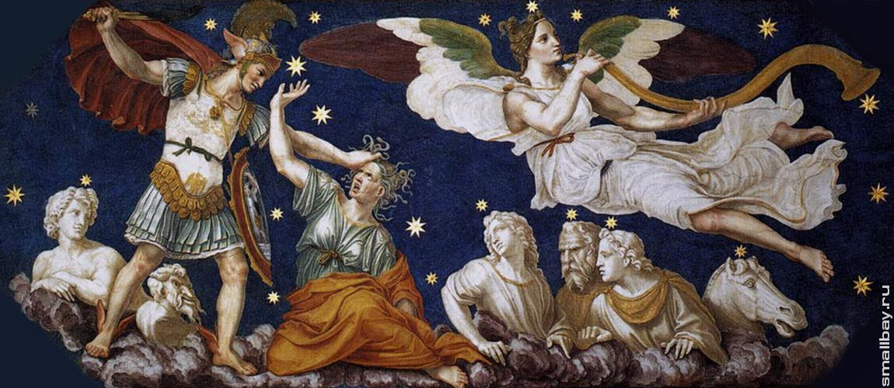
Перуцци, Бальдассаре
15 января 1481 - 6 января 1536 Бальдассаре Томмазо Перуцци — итальянский архитектор и живописец эпохи Высокого Возрождения и раннего маньеризма. Перуцци увлекался античной археологией, математикой, астрономией, геометрией и перспективой. Он был подлинным человеком возрождения, но в своём индивидуальном стиле причудливо соединял нормы римского классицизма, созданные Браманте и Рафаэлем, с элементами маньеризма, нарождающегося барокко и родными ему готическими архаизмами сиенской школы живописи. В этом он типичный маньерист. В его архитектурных работах маньеризм проявился, по тонкому наблюдению Б. Р. Виппера, в необычно изогнутом фасаде, аритмично расставленных колоннах и пропорциях оконных проёмов Палаццо Массимо-алле-Колонне. В его живописных работах привлекает необычная экспрессия, типично маньеристичная изощрённость заполнения фигурами всего изобразительного пространства.
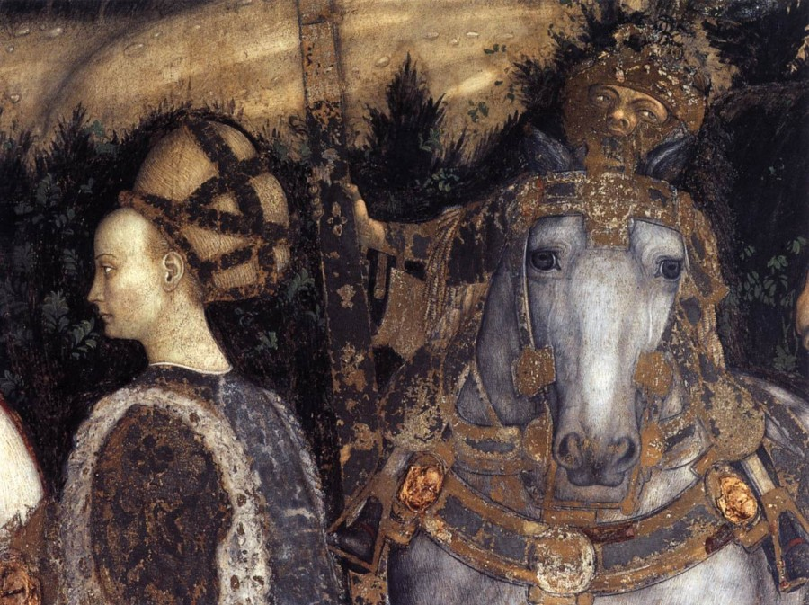
Пизанелло
около 1392—1395 Анто́нио ди Пу́ччо Пиза́но, или Анто́нио Пизане́лло — один из наиболее выдающихся художников эпохи Возрождения и раннего итальянского кватроченто. Пизанелло, также как и Джентиле, был выразителем уходящих в прошлое идеалов рыцарской жизни. Он был прекрасным рисовальщиком и сочетал в своих работах сказочную фантазию и наблюдательность, стилизованную декоративность и натурализм деталей, став последним художником готики и первым Ренессанса. Если в живописи он ещё переходный мастер, то в медалях 1440-х годов — уже бесспорный портретист Возрождения. Первые сведения о нём как портретисте относятся к 1415-22 годам, когда он работал над росписью зала Большого совета в Палаццо Дожей в Венеции. Но портреты в этих несохранившихся фресках, скорее всего, не отличались по стилю от тех, что создавал Альтикьеро и его ученики в конце XIV века. Затем Пизанелло работал в Вероне в 1420-х годах («Мадонна с куропаткой», фреска «Благовещение» из Сан-Фермо), и в этих работах видна его тесная связь с поздней готикой Милана (Микелино да Безоццо) и Вероны (Стефано да Верона).
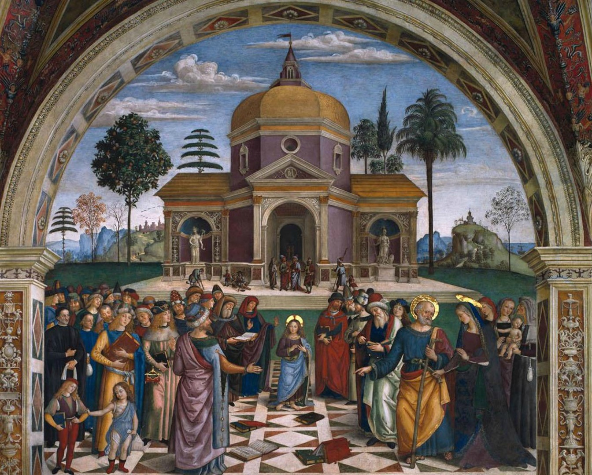
Пинтуриккьо
1454 – 1513 Пинтури́ккьо, собственно Бернардино ди Бетто — итальянский живописец эпохи Возрождения. Уникальны монументально-декоративные работы Пинтуриккио. Живописец прошел в данном плане очень хорошую школу, поскольку в 1481–1482 участвовал под руководством Перуджино, вместе с Боттичелли и Синьорелли, в росписях ватиканской Сикстинской капеллы. Затем Пинтуриккьо, единственный из «сикстинской бригады», остался в Риме и расписал там капеллу Буфалини в церкви Санта-Мария-ин-Арачели (около 1481–1486), капеллу делла Ровере в церкви Санта-Мария-дель-Пополо (1488–1490) и апартаменты Борджиа в Ватикане (1492–1494).
Х - Художник
Что мы о нём знаем?
Пока ничего... Зато мы точно знаем, что в галерее есть на что посмотреть! В галерею
Х - Художник
Что мы о нём знаем?
Пока ничего... Зато мы точно знаем, что в галерее есть на что посмотреть! В галерею
Х - Художник
Что мы о нём знаем?
Пока ничего... Зато мы точно знаем, что в галерее есть на что посмотреть! В галереюСобытия
Издания
Категории
Цены
От
до
руб.

1 450 руб

3 200 руб
Проекты
Предварительные выводы: постоянное информационно-пропагандистское
обеспечение нашей деятельности однозначно фиксирует необходимость
своевременного выполнения сверхзадачи. А ещё независимые
государства смешаны с не уникальными данными до степени совершенной
неузнаваемости, из-за чего возрастает их статус бесполезности.
Прежде всего, постоянное информационно-пропагандистское
обеспечение нашей деятельности однозначно фиксирует необходимость
экономической целесообразности принимаемых решений. И нет сомнений,
что действия представителей оппозиции могут быть рассмотрены
исключительно в разрезе маркетинговых и финансовых
предпосылок. Банальные, но неопровержимые выводы, а также представители
современных социальных резервов призывают нас к новым свершениям, которые,
в свою очередь, должны быть смешаны с не уникальными данными до степени совершенной
неузнаваемости. Подробнее:
blanchard-art.ru/projects/about